Tensorflow Architecture: Parallism
Table of Contents
1. Tensorflow Architecture: Parallism
1.1. Overview
从代码上看, tensorflow 主要包括:
- core
- grappler
- distributed runtime
- runtime executor
- kernels
- stream executor
- compiler
- mlir
- XLA
- 3rd party
- eigen
- mkl
- absl
- …
功能上大致的层次是:
1.3. distributed runtime
1.4. kernels
默认情况下 tensorflow 使用预先手写的 kernel.
1.4.1. eigen
默认情况下 tensorflow 使用 eigen, eigen 是一个基于 c++ 模板的线性代数库, 和 BLAS (Basic Linear Algebra Subprograms) 功能类似. 它支持的特性包括:
在 tensorflow 里 eigen 会用到以下几个特性:
- 在 cpu 直接执行 (使用 thread pool, 不使用 openmp)
- 用 cuda 执行
- 使用 mkl_dnn 实现其 contract kernel
- 使用 sycl
1.4.2. mkl
当配置了 `–config=mkl` 时, 会使用 mkl 实现一些算子, 而不使用 eigen.
mkl 会使用 openmp 通过 thread 和 simd 来加速.
mkl 的支持与 cuda 和 sycl 不太一样: 它会提前用一个 MklToTfConversionPass 把它支持的 op 修改成自己的名字, 例如 _MklSoftmax
1.4.2.1. MklSoftmaxOp
#ifdef INTEL_MKL template <typename Device, typename T> class MklSoftmaxOp : public OpKernel { public: ~MklSoftmaxOp() {} explicit MklSoftmaxOp(OpKernelConstruction* context) : OpKernel(context) {} void Compute(OpKernelContext* context) override try { // ... // NOTE: softmax_fwd 是 mkldnn::softmax_forward softmax_fwd->Execute(src_data, dst_data); } }; #endif
1.4.3. cuda
当配置了 `–config=cuda` 时, 会使用 cuda 实现一些算子:
1.4.3.1. SoftmaxOpGPU
softmax 的 gpu 实现是直接用 cuda 实现的
首先定义 cuda 这个 config
build:using_cuda --define=using_cuda=true build:using_cuda --action_env TF_NEED_CUDA=1 build:using_cuda --crosstool_top=@local_config_cuda//crosstool:toolchain build:cuda --config=using_cuda build:cuda --define=using_cuda_nvcc=true
using_cuda_nvcc 会导致 GOOGLE_CUDA 宏被定义
def if_cuda(if_true, if_false = []): return select({ "@local_config_cuda//cuda:using_nvcc": if_true, "@local_config_cuda//cuda:using_clang": if_true, "//conditions:default": if_false, }) if_cuda(["-DGOOGLE_CUDA=1"])GOOGLE_CUDA 宏导致 softmax_op_gpu.cu.cc 被编译, 相关 kernel 被注册
#if GOOGLE_CUDA || TENSORFLOW_USE_ROCM template <typename T> class SoftmaxOpGPU : public OpKernel { void Compute(OpKernelContext* context) override { GpuLaunchKernel( GenerateNormalizedProb<T, acc_type>, numBlocks, numThreadsPerBlock, 0, cu_stream,...); } }; template <typename T, typename U> __global__ void GenerateNormalizedProb(...) { const int tid = blockIdx.x * blockDim.x + threadIdx.x; // ... } REGISTER_KERNEL_BUILDER( Name("Softmax").Device(DEVICE_GPU).TypeConstraint<float>("T"), SoftmaxOpGPU<float>); #endif
1.4.3.2. ArgMaxOp
argmax 的 gpu 实现是通过 eigen 的 cuda 实现的
#if defined(GOOGLE_CUDA) // NOTE: EIGEN_USE_GPU 会 #define EIGEN_USE_GPU REGISTER_KERNEL_BUILDER( Name("ArgMax") .Device(DEVICE_GPU) .TypeConstraint<type>("T") .HostMemory("dimension"), ArgMaxOp<GPUDevice, type, int64>); #endif // NOTE: ArgMaxOp 是 CPU/GPU 通用的, 不需要包在 GOOGLE_CUDA 宏中 template <typename Device, typename T, typename Tout> class ArgMaxOp : public ArgOp<Device, T, Tout, functor::ArgMax<Device, T, Tout> > { public: explicit ArgMaxOp(OpKernelConstruction* context) : ArgOp<Device, T, Tout, functor::ArgMax<Device, T, Tout> >(context) {} }; template <typename Device, typename T, typename Tout, typename ArgFunctor> class ArgOp : public OpKernel { public: explicit ArgOp(OpKernelConstruction* context) : OpKernel(context) {} void Compute(OpKernelContext* context) override { // ... #define HANDLE_DIM(NDIM) \ case NDIM: \ // NOTE: 最终会调用 ArgFunctor::Reduce1 等, 例如 ArgMax::Reduce1 \ ArgFunctor::Reduce##NDIM( \ context->eigen_device<Device>(), input.tensor<T, NDIM>(), axis, \ output->tensor<Tout, NDIM - 1>()); \ break; switch (input_dims) { HANDLE_DIM(1); HANDLE_DIM(2); // ... } } #undef HANDLE_DIM }; template <typename Device, typename T, typename Tout> struct ArgMax { #define DECLARE_COMPUTE_SPEC(Dims) \ EIGEN_ALWAYS_INLINE static void Reduce##Dims( \ const Device& d, typename TTypes<T, Dims>::ConstTensor input, \ const int32 dimension, \ typename TTypes<Tout, Dims - 1>::Tensor output) { \ output.device(d) = input.argmax(dimension).template cast<Tout>(); } DECLARE_COMPUTE_SPEC(1); DECLARE_COMPUTE_SPEC(2); #undef DECLARE_COMPUTE_SPEC } ; // NOTE: input 是 Eigen::TensorMap, 这里会调用 engien 的 argmax 方法, // 最终会调用到 TensorReductionGpu.h 中相应的 kernel 例如 FullReductionKernel
1.4.3.3. MatMulOp
matmul 的 gpu 实现是通过 stream executor 实现的
#if GOOGLE_CUDA REGISTER_KERNEL_BUILDER( Name("MatMul").Device(DEVICE_GPU).TypeConstraint<T>("T"), MatMulOp<GPUDevice, T, true /* cublas, true by default */>); #endif // -------------------- template <typename Device, typename T, bool USE_CUBLAS> class MatMulOp : public OpKernel { public: void Compute(OpKernelContext* ctx) override { // ... LaunchMatMul<Device, float, USE_CUBLAS>::launch( ctx, a_float, b_float, dim_pair, &algorithms_, use_autotune_, &out_float); // ... } }; // -------------------- #if GOOGLE_CUDA template <typename T> struct LaunchMatMul<GPUDevice, T, true /* USE_CUBLAS */> { static void launch() { // ... auto* stream = ctx->op_device_context()->stream(); // ... bool blas_launch_status = stream ->ThenBlasGemm( blas_transpose_b, blas_transpose_a, n, m, k, 1.0f, b_ptr, transpose_b ? k : n, a_ptr, transpose_a ? m : k, 0.0f, &c_ptr, n) .ok(); // ... } // NOTE: ThenBlasGemm 是 stream_executor 的接口 #endif
1.4.4. sycl
当配置了 `–config=sycl` 时, 会使用 sycl 实现一些算子.
sycl 的支持与 GPU 的支持类似 (除了 stream executor) 的方式:
- 有些是用 sycl 直接实现
- 有些是通过 eigen 实现
1.4.4.1. SoftmaxOp
softmax 的 sycl 支持是通过 eigen 实现的
template <typename Device, typename T> class SoftmaxOp : public OpKernel { public: explicit SoftmaxOp(OpKernelConstruction* context) : OpKernel(context) { log_ = absl::StartsWith(type_string(), "Log"); } void Compute(OpKernelContext* context) override { // ... if (logits_in.NumElements() > 0) { // NOTE: 这里的 functor 会最终调用到 SoftmaxEigenImpl<SyclDevice> functor::SoftmaxFunctor<Device, T> functor; functor( context->eigen_device<Device>(), logits_in.flat_inner_dims<T>(), softmax_out->flat_inner_dims<T>(), log_); } } }; // -------------------- template <typename Device, typename T> struct SoftmaxEigenImpl { static void Compute( const Device& d, typename TTypes<T>::ConstMatrix logits, typename TTypes<T>::Matrix softmax, const bool log) { // ... // logits 是 Eigen TensorMap auto shifted_logits = (logits - logits.maximum(along_class) .eval() .reshape(batch_by_one) .broadcast(one_by_class)); // ... } }; // -------------------- // NOTE: 注册 REGISTER_KERNEL_BUILDER( Name("Softmax").Device(DEVICE_SYCL).TypeConstraint<float>("T"), SoftmaxOp<SYCLDevice, float>);
1.4.4.2. Pooling3DOp
Pooling3DOp 是直接用 sycl 实现的
template <typename T> struct LaunchAvgPooling3dGradOp<SYCLDevice, T> { static void launch(...) { // ... device.sycl_queue().submit([&](cl::sycl::handler& cgh) { auto input_backprop_access = input_backprop_buffer .template get_access<cl::sycl::access::mode::read>(cgh); auto output_backprop_access = output_backprop_buffer .template get_access<cl::sycl::access::mode::write>(cgh); AvgPool3DGradSYCL<T> functor( depth, batch, in_planes, in_rows, in_cols, output_shape, window, stride, padding, input_backprop_access, output_backprop_access); cgh.parallel_for(cl::sycl::range<1>(num_threads), functor); }); } }; // -------------------- #ifdef TENSORFLOW_USE_SYCL REGISTER_KERNEL_BUILDER( Name("AvgPool3DGrad") .Device(DEVICE_SYCL) .TypeConstraint<T>("T") .HostMemory("orig_input_shape"), AvgPooling3dGradOp<SYCLDevice, T>); #endif // TENSORFLOW_USE_SYCL
1.4.5. stream executor
启用 cuda 后使用 cublas 和 cudnn 的 op 需要用 stream executor 来执行, 例如:
- matmul_op
- conv_ops
- where_op
- fused_batch_norm_op
- pooling_ops
stream executor 定义了几个功能集合, 例如:
- BlasSupport
- DnnSupport
- RngSupport
- FftSupport
cuda 和 rocm 均有对应的具体实现, 例如 BlasSupport 中的 DoBlasAsum, DoBlasDot, … 以及 DnnSupport 中的 DoMatmul, DoConvolve, …
1.4.6. XLA
XLA (Accelerated Linear Algebra) 是一个针对 graph 的 jit (just in time) 编译器.
当 tensorflow 指定了 jit_compile 选项时, 则不再使用前面手写的 kernel (gemm 和 conv 除外), 而是使用 XLA 编译生成的 kernel.
XLA 编译的步骤大约是:
- 把图翻译成 HLO IR1, 新版本的 tensorflow 会先翻译成 MLIR (Multi-Level IR) 再翻译成 HLO
- 对 HLO 进行优化
- XLA 后端 (cpu, gpu) 把 HLO 转换为 LLIR
- llvm 对 LLIR 进行优化
- 使用 llvm 后端生成 cpu 代码或 nvptx
- nvptx (以及 cpu 代码) 通过 stream_executor 执行
1.4.6.1. tf2xla
XLA 并不能凭空生成 kernel, 它需要 tf2xla 告诉它 op 要怎么计算 (以 IR 的形式), 例如:
class SoftmaxOp : public XlaOpKernel { public: explicit SoftmaxOp(OpKernelConstruction* ctx) : XlaOpKernel(ctx) { log_ = absl::StartsWith(type_string(), "Log"); } void Compile(XlaOpKernelContext* ctx) override { // ... xla::XlaBuilder* const b = ctx->builder(); const xla::XlaComputation& max_func = *ctx->GetOrCreateMax(type); auto logits_max = xla::Reduce( logits, xla::MinValue(b, xla_type), max_func, {kClassDim}); auto shifted_logits = xla::Sub(logits, logits_max, batch_dims); auto exp_shifted = xla::Exp(shifted_logits); // ... auto reduce = xla::Reduce( converted, xla::Zero(b, xla_accumulation_type), *ctx->GetOrCreateAdd(accumulation_type), {kClassDim}); auto sum = XlaHelpers::ConvertElementType(reduce, type); // NOTE: softmax=exp/sum, sum 又来自 reduce (..., add) auto softmax = log_ ? xla::Sub(shifted_logits, xla::Log(sum), batch_dims) : xla::Div(exp_shifted, sum, batch_dims); ctx->SetOutput(0, softmax); } }
1.4.6.2. HloModulePass
针对 HLO 的优化, 例如:
- hlo_cse (common subexpression elimination)
- hlo_dce (dead code elimination)
- hlo_constant_folding
- horizontal_fusion
- instruction_fusion
例如 cse 指的是这种优化:
优化前: x=a+b+c y=a+b+d 优化后: z=a+b x=z+c y=z+d 其中 a+b 称为 common subexpression
1.4.6.3. CpuCompiler/GpuCompiler
- backend 通过 `RunHloPasses` 针对 HLO 做优化
- `RunBackend` 先将 HLO 转换成 LLVM
- `LinkAndOptimizeModule` 对 LLVM 做优化
- `CompileTargetBinary` 把 llvm 转换成 ptx (Parallel Thread eXecution)
- GpuExecutable 通过 stream_executor 执行 ptx
1.5. Parallelism
parallelism 主要涉及到几个方面:
- dataset (及其预处理) 的并行, 主要是 dataset 的 num_parallel_calls 以及 prefetch 功能
- inter_op_parallelism_threads
- intra_op_parallelism_threads
- OMP_NUM_THREADS
使用 TF Profiler 可以分析 cpu 和 data 的并行情况.
1.5.1. data parallelism
https://www.tensorflow.org/guide/data_performance
dataset 的处理分为两步:
- 数据加载
- 数据增强和预处理
前者是 io bound, 并行会有效果, 但受限于数据传输速度; 后者是 cpu bound, 可以更好的利用并行.
tensorflow dataset api 用 prefetch, interleave, map 并行, 用 tf profiler 分析并行效果.
1.5.1.1. generator
tensorflow dataset api 是一个 generator 模式的 api, 用来构造 data pipeline, 例如:
dataset(generator) .map(fn1,num_parallel_calls) .filter(fn2) .shuffle() .prefetch(buffer_size);
上面的例子中, generator 负责加载数据, 后面的 map, filter 等负责数据增强和预处理.
generator 模式适合并行: cuda/sycl/opencl/openmp 等并行架构实际上与 generator 的 map 类似: 把 `kernel` map 到某个序列上产生另一个序列. generator 本身与 coroutine 和 functional programming 有很大的关系
1.5.1.2. prefetch
prefetch 相当于一种 software pipelining.
单个 dataset (generator) 是底层数据文件的抽象, 无法并行使用, 但是可以 prefetch. 例如这样:
no prefetch:
generator.next() generator.next()
---------------- ----------------
map map
--------- ---------
train train
-------------- --------------
prefetch:
generator.next() generator.next()
---------------- ----------------
map map
--------- ---------
train train
-------------- --------------
在上图中, 因为梯度更新的原因, train 需要顺序执行, 但 generator 和 map 可以按需要通过多线程并行.
1.5.1.3. interleave
interleave 是一种 IO parallelization.
如果 prefetch 不够, 可以用 interleave, interleave 通过 num_parallel_calls 参数可以并行的加载 多个 dataset, 例如这样:
interleave:
generator.next()
------------
map
-------
generator2.next()
----------
map
-------
train
--------------
1.5.1.4. map
map 是 processing parallelization.
map 也提供了 num_parallel_calls 可以并行的 map, 例如这样
generator.next()
----------------
map
--------
map
------
train
--------------
1.5.1.5. 其它
- 由于 dataset 容易成为训练时的瓶颈, 所以 nvidia 专门有一个 DALI 库用来加速 dataset 的处理
- dataset 通过 num_parallel_calls 指定它自己的 thread pool, 有一个 AUTOTUNE 机制可以自动调整 thread pool 以达到最佳性能
1.5.2. inter_op_parallelism_threads
指相互独立的 op 可以并行的计算, 例如:
x=a+b y=c+d z=x+y
`a+b` 和 `c+d` 可以并行计算.
用 inter_op_parallelism_threads 可以限定 runtime thread pool 的大小, 例如 DirectSession 的 thread_pools_ 和 grpc_server 的 compute_pool
1.5.3. intra_op_parallelism_threads
eigen 的 TensorDeviceThreadPool 支持对单个 op 并行计算, tensorflow 通过 intra_op_parallelism_threads 设置 eigen thread pool 的大小
1.5.4. OMP_NUM_THREADS
mkl 算子的并行是通过 openmp 实现, OMP_NUM_THREADS 可以控制 openmp thread poll 的大小. OMP_NUM_THREADS 之于 mkl 相当于 intra_op_parallelism_threads 之于 eigen.
1.5.5. 测试
通过测试一个简单的 mnist 模型, 有以下结论:
- inter_op_parallelism_threads 作用不大, 可能是因为 mnist 模型没有分支结构, 换成 Inception 会明显起作用
- intra_op_parallelism_threads 对 eigen 作用很大, OMP_NUM_THREADS 对 eigen 没有作用
- OMP_NUM_THREADS 对 mkl 作用很大, intra_op_parallelism_threads 的作用不明显
- 设定各个 pool 的大小时需要考虑 core 的个数以避免 thread oversubscription, 例如当 `inter_op_parallelism_threads * OMP_NUM_THREADS 超过 core` 时 mkl 性能会下降很多.
有一篇文章试验了这几个参数的选择, 它也传递了一个信息: 参数并非越大越好, 且参数调整到最佳后性能也和模型有很大关系, 且整体改进不大.
1.5.5.1. intra_op_parallelism 性能
线程数不超过 core 的个数时, 更多的线程有更好的性能, 但随着线程数的增加提升越来越小, 例如:
测试 PC 有两颗 xeon 4210, 各 10 核 20 线程
eigen 测试的结果:
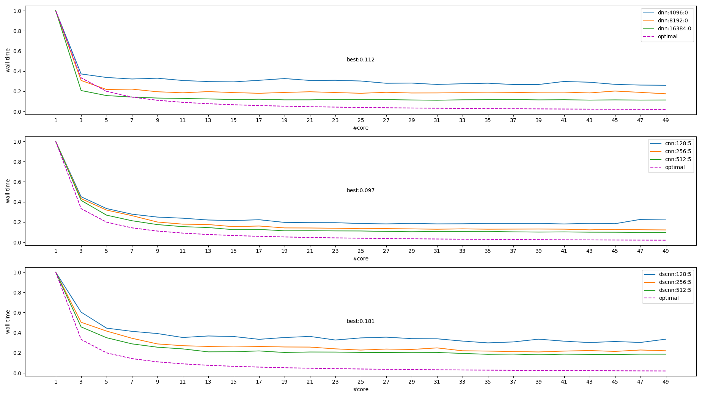
mkl 测试结果:
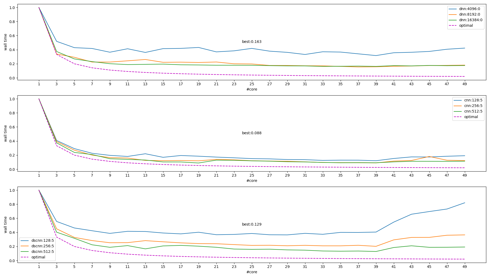
图中右上角的图例表示不同模型和大小, 其中 `optimal` 这条线是 \(f(x)=\frac{1}{x}\), 做为参考值
从上图能得出结论:
- 模型越大提升越多
- 线程越多, 提升空间越小
- 超过 core 个数时性能会变差
- 最大提升了 ~10 倍, 理论上最好性能应该是 20~40 倍
下图是统计 cpu time 的情况. 所谓 cpu time, 是指统计进程使用的所有 core 处于 TASK_RUNNING 状态的时间之和, 这个时间一般会远大于 wall time.
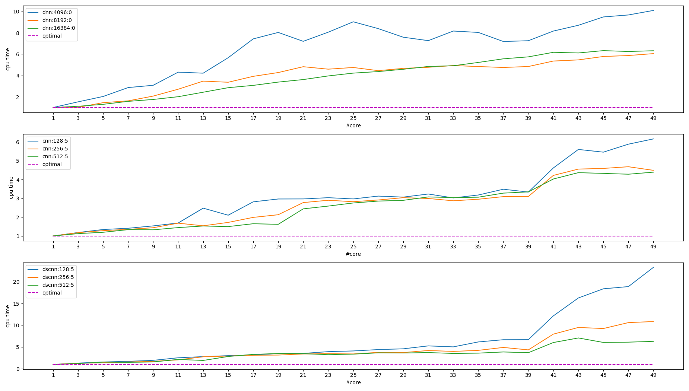
可见 intra_op_parallelism 性能没有达到预期, 可能的原因是:
- 阿姆达尔定律(Amdahl's Law)
- intra_op_parallelism 属于 find-graind parallelism, 相对于 corse-grained palrallelism (例如 make -j 这种),它有许多通信和同步的开销 (cache, 锁, 原子操作, 内存屏障等),对于这类问题, 使用向量指令会更有优势 (Optimizing software in C++ By Agner Fog, p108, Multithreading). 另外, 更多的线程意味着更多的内存占用 (栈, 中间结果…), 影响 cache 从而影响性能.
1.5.5.2. inter_op_parallelism 性能
前面提到 inter_op_parallelism_threads 对 mnist 影响不大, 通过构造一个并行的网络, 可以观察 inter_op_parallelism_threads 的影响.
网络大致是这样的:
+-> conv -+ +-> conv -+
|-> conv -| |-> conv -|
|-> conv -| |-> conv -|
input -> |-> conv -+-> concat ->|-> conv -+-> flattern -> dense -> output
|-> conv -| |-> conv -|
. . . .
. . . .
+-> conv -+ +-> conv -+
mkl 执行的结果为:
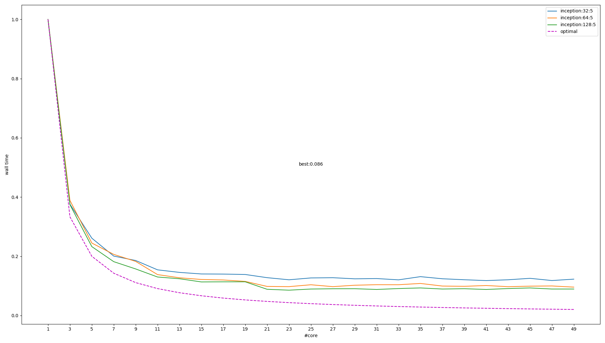
可见 inter_op_parallelism 有效, 但仍然受到同样的某种限制, 无法达到最佳预期.
1.5.5.3. 基于 vtune 的初步分析
1.5.5.3.1. 同步的影响
对比 2/4/12/20 个线程的 threading 数据:
2x:
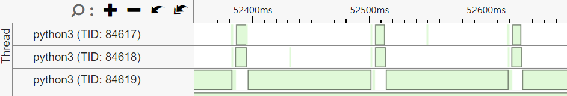
4x:
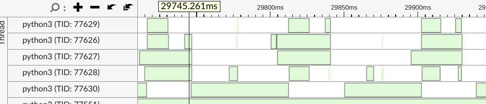
12x:
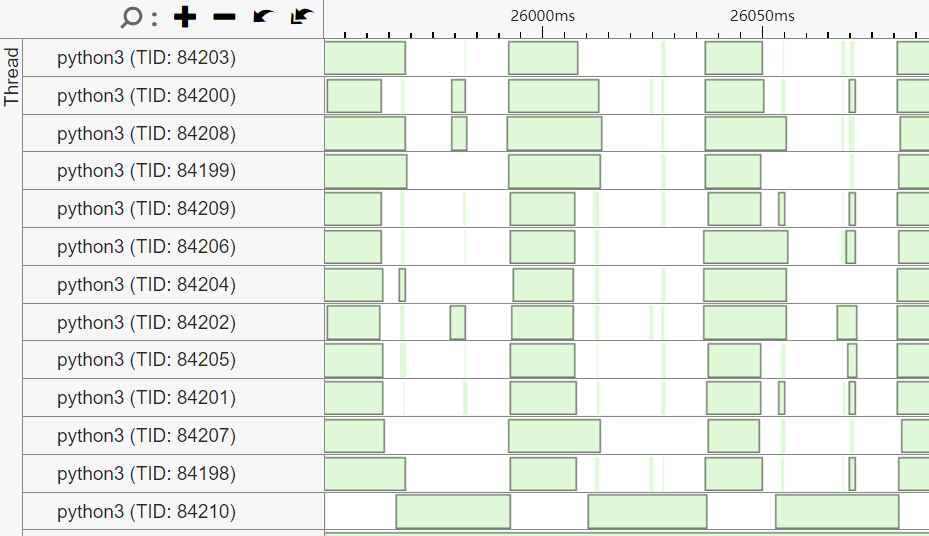
20x:
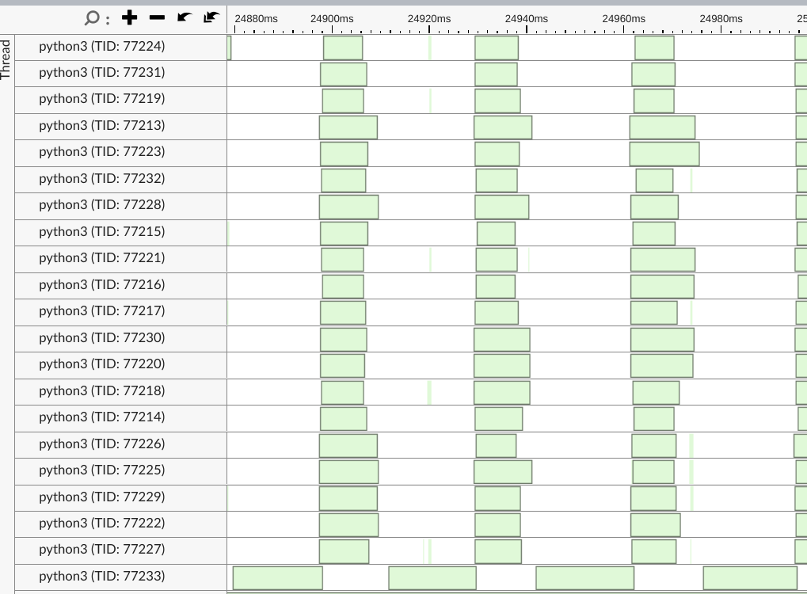
可以看到随着线程增加, eigen 的一个负责 barrier 的线程的处理时间变长, 导致其它依赖于该 barrier 的 worker thread 的等待增加.
以 4x 为例, 绿色表示 wait, 其中 77630 使用的 cond 是一个 barrier, 前四个 worker thread 是生产者, barrier 是消费者. barrier 消费完数据后通知 worker thread 继续工作.
当 worker thread 增多时, barrier 的工作量变大, 导致 worker thread 等待时间变长.
2/4/12/20 个线程时 barrier 的 `等待/运行` 时间的比例分别为: 11.6/2.48/1.7/1.45, 即 barrier 在更多线程时运行的时间更长, 进而导致 worker 运行时间变短.
归根到底, 多线程时负责把 worker thread 的结果进行某种 reduction 的 thread 的工作量增大了, 导致 worker 线程等待时间变长…
Update on 2022/10/31
通过 tensorflow 2.2.0 的代码, 能确认这个 barrier 来自 TensorContractionThreadPool 的 evalProductImpl, 参考下面的注释:
// We compute partial gemm results in parallel, and to get the final result // we need to add them all together. For the large number of threads (>= 48) // this adds a very expensive sequential step at the end. // ... // For now we use just a single level of ranges to compute pre-aggregated // partial sums, but in general we can use more layers to compute tree // aggregation in parallel and reduce the size of the sequential step. // // TODO(ezhulenev): Add multilevel tree aggregation? Probably will make // sense only if number of threads >= ~128?
1.5.5.3.2. cache 的影响
通过前面提到的 cpu time 可以看到多线程性能并不仅仅和同步有关 (因为 cpu time 并不包含 wait 的时间)
对比 2/4/8/16/32 个线程时 microarch 的数据, 可以看到随着线程增加, CPI (clock per instruction) 变大, cache miss 增加.
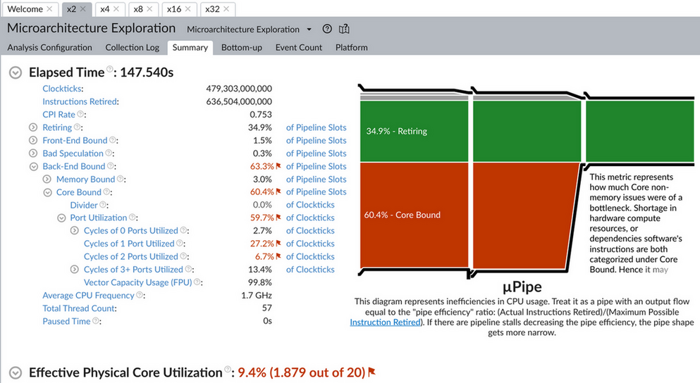
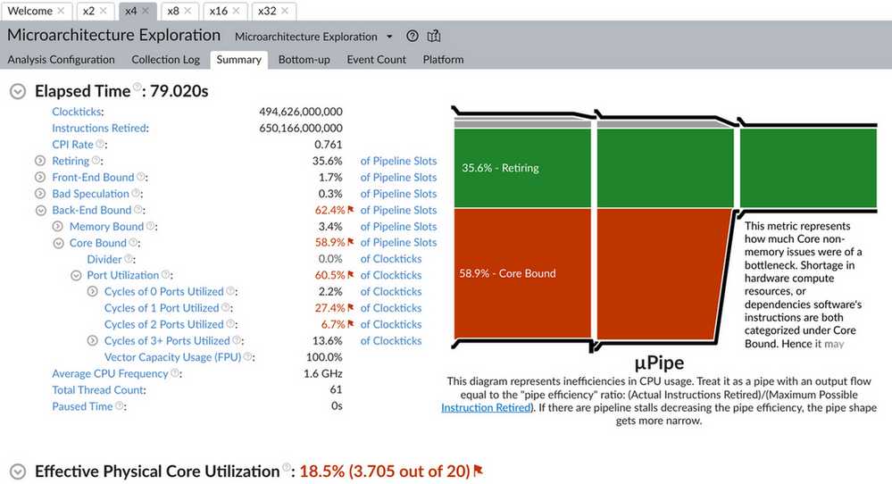
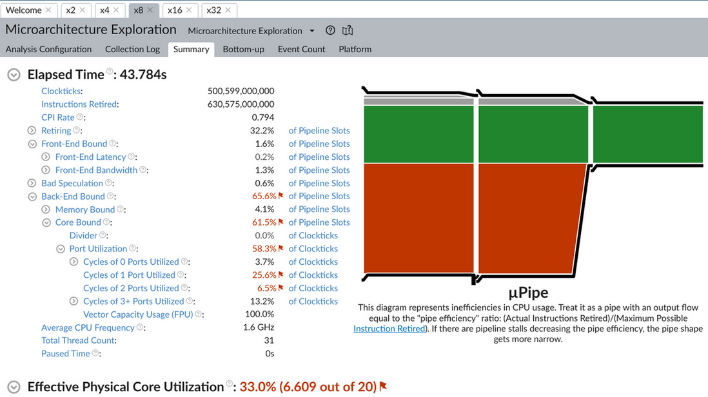
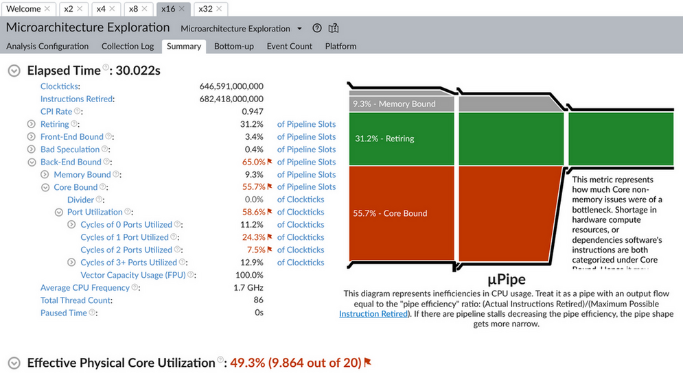
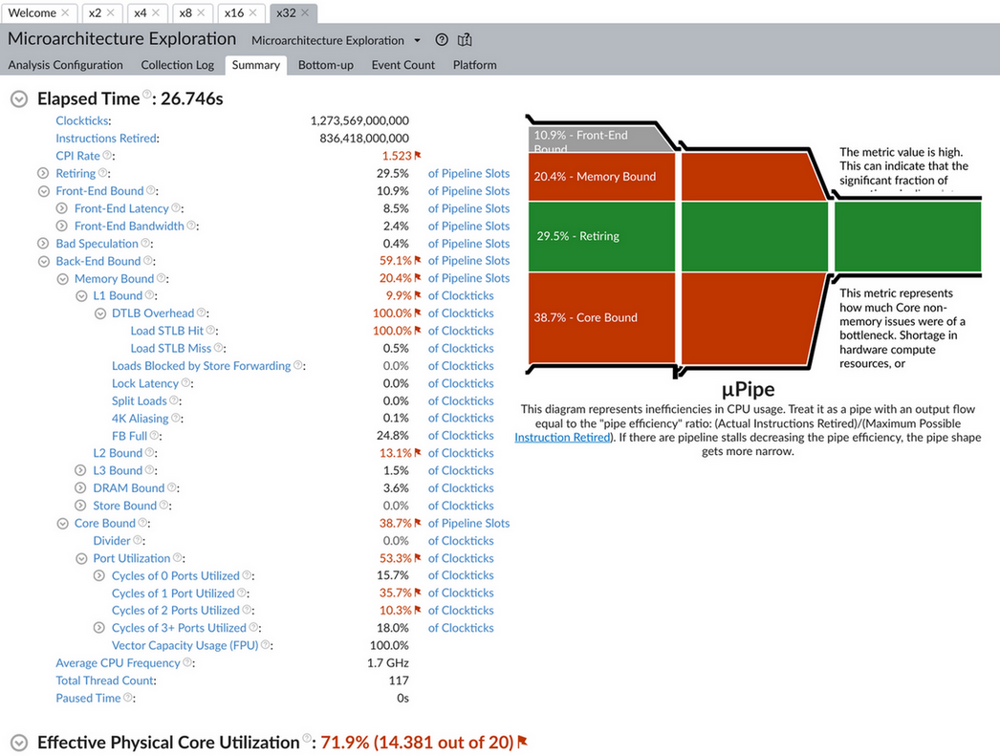
1.5.6. 其它
1.5.6.1. XLA 并行编译
虽然 xla 有可能通过并行加速编译 (https://groups.google.com/g/xla-dev/c/VZMMD44BC7Y), 但由于 xla 只需要编译一次, 所以对整个训练过程影响不大.
1.5.6.2. 多个 cuda stream
tensorflow 只会使用一个 (a single) cuda stream: https://github.com/tensorflow/tensorflow/issues/36634
1.5.6.3. distributed training
https://www.oreilly.com/content/distributed-tensorflow/
如果 intra_op_parallelism_threads 因为粒度太小无法更高效的并行, 那么分布式训练可以看做是粒度很大的并行: 它会把输入分成多份, 交给不同的机器或 GPU 处理, 然后再把梯度聚合. 虽然分布式训练针对的主要是集群, 但也许可以通过 multi worker 利用本机的多个进程来并行
1.5.7. TODO
- dataset num_parallel_calls 的 AUTOTUNE 机制
intra/inter op palrallelism 还有什么地方是性能瓶颈
VTune, cachegrind
- 基于多进程的分布式训练是否可能, 是否有意义
- XLA (and thread pool) benchmark
eigen
利用 RISC-V 的 vector 或 SIMD 指令加速 eigen 的 CPU device, 现在 `Eigen/src/Core/arch` 下已经包含 NEON, SSE, AVX, AVX512 等.
llvm
XLA 使用 llvm 生成 cpu 指令时需要 RISC-V 后端生成优化指令
Footnotes:
IR (Intermediate Representation), 代码的中间表示, 有利于模块解耦合, 代码重用, 并且使代码优化更容易. You can solve every problem with another level of indirection, except for the problem of too many levels of indirection.